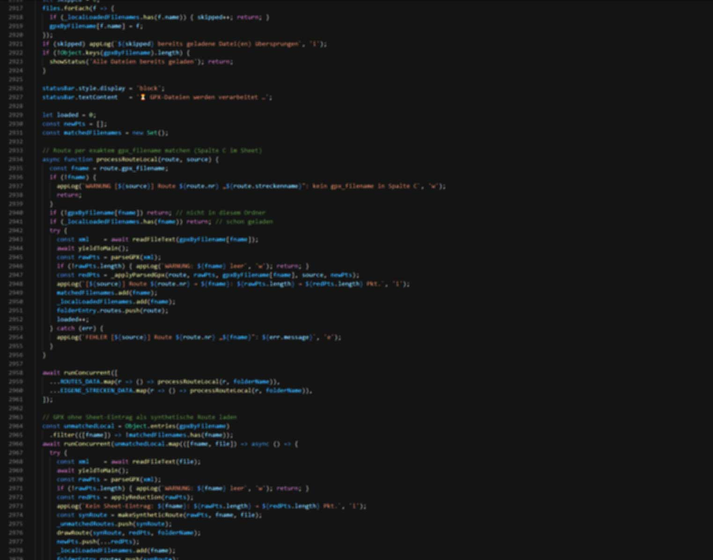

📌 Notiz an mich selbst (später umsetzen) — GitHub & KI-Anteil
Repo ist aktuell komplett privat, vieles KI-gestützt. Öffentlich zeigen? Ja, aber kuratiert – nicht „alles public".
- Portfolio-Seite = idealer erster Public-Repo (eigene Arbeit, einfache robuste Technik). Hier auf der Entwicklungsseite verlinken → runde Story.
- Experimente/Halbfertiges bleibt privat. Lieber 1–2 saubere Repos mit gutem README als zwanzig halbgare.
- KI-Anteil offen framen, nicht verstecken: „KI-gestützt gearbeitet, aber jede Zeile verstanden & verantwortet" → ist selbst eine Kompetenz. Nicht als handgeschnitztes Werk verkaufen, wenn ich es nicht erklären kann.
Faustregel vor „public": Kann ich in 5 Min am Whiteboard erklären, warum der Code so aussieht? Ja → public. Nein → erst verstehen oder privat.
TODO: README für Portfolio-Repo entwerfen + KI-Workflow als Stärke texten.

Eigene Projekte — live & öffentlich
Neben den NDA-Fallstudien: Dinge, die ich selbst gebaut und veröffentlicht habe. Alle live erreichbar. Die Repositories sind aktuell privat — Code gerne auf Anfrage.
Portfolio-Website
Diese Bewerbungs-Website: statisch, schlank, ohne Framework — Fokus auf Ladezeit, Barrierefreiheit und wartungsarmen Betrieb. Quellcode offen einsehbar.
wegzuzler
— kurze Beschreibung folgt —
Jonah-Protokoll
— kurze Beschreibung folgt —
KetoPlaner
— kurze Beschreibung folgt (Web-App rund um ketogene Ernährung) —
endurensohn Tours
Private Hobbyseite rund um Enduro-Touren — aus eigenem Antrieb gebaut und veröffentlicht.